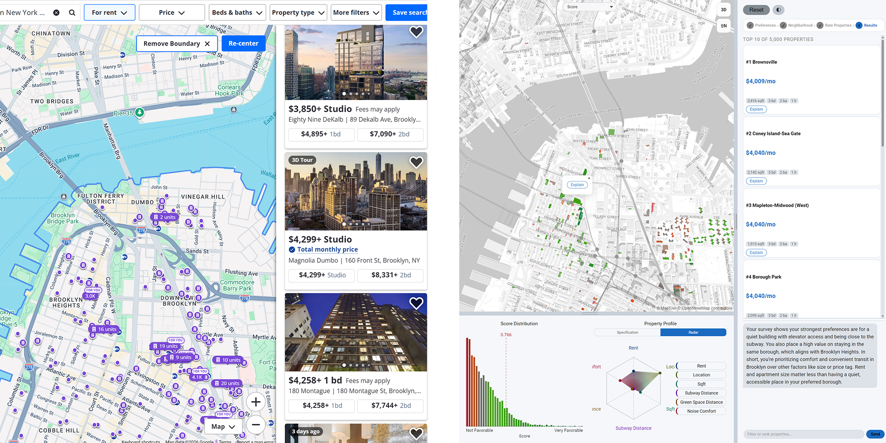
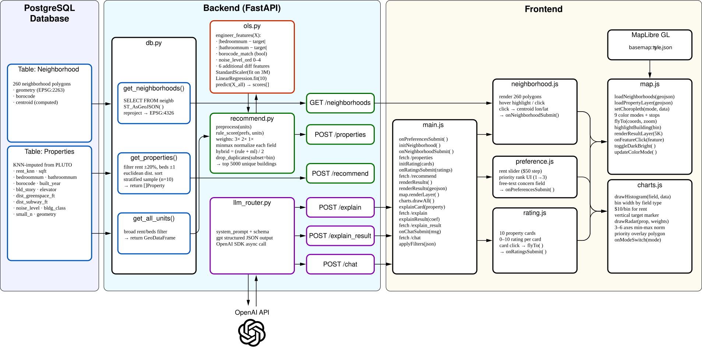
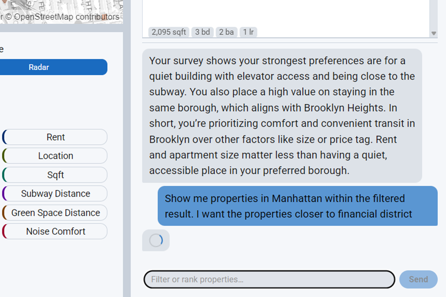
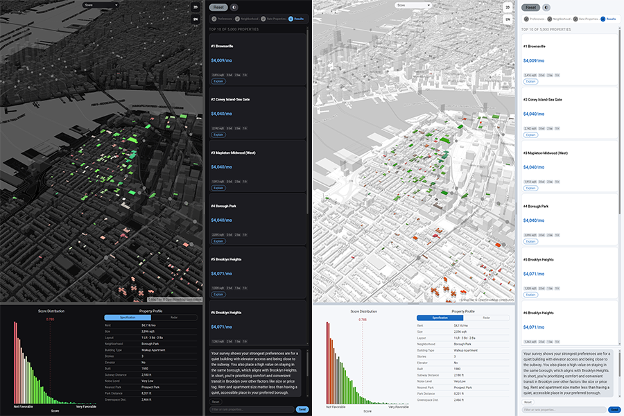
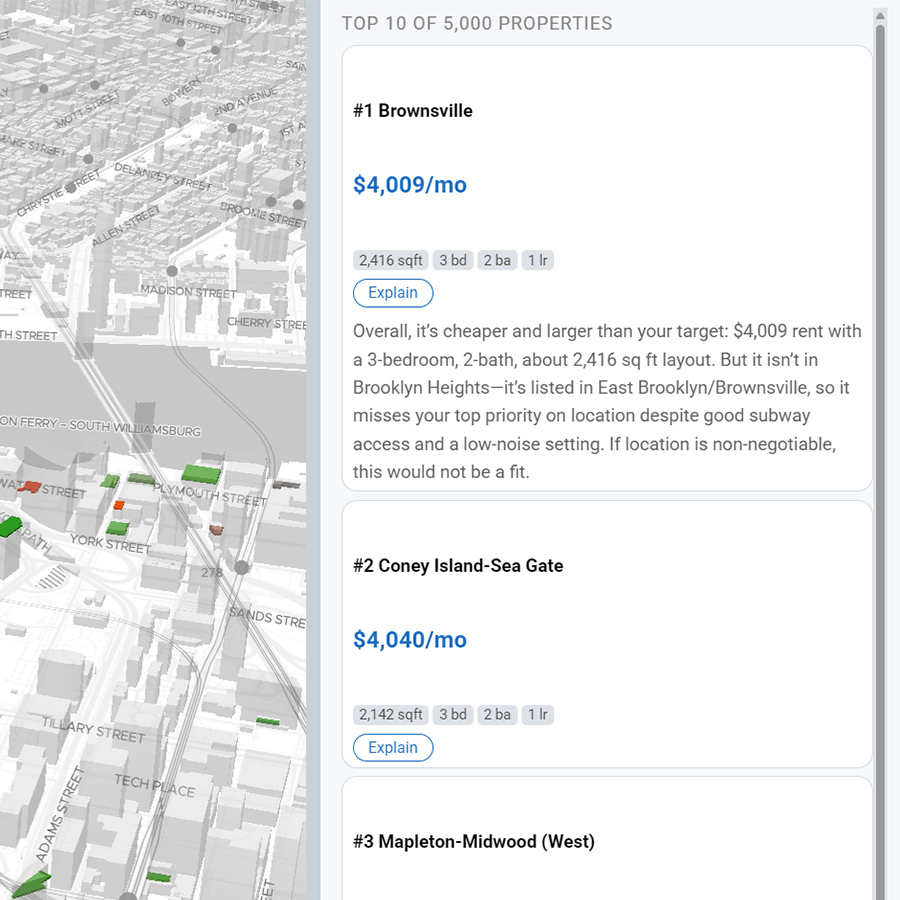
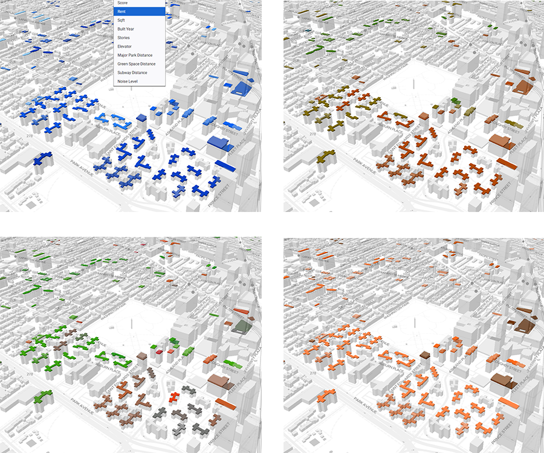
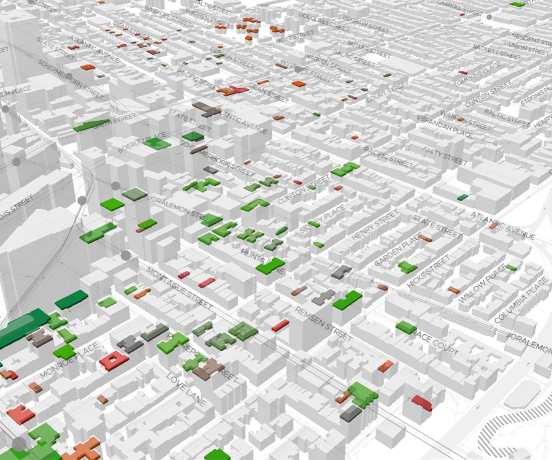
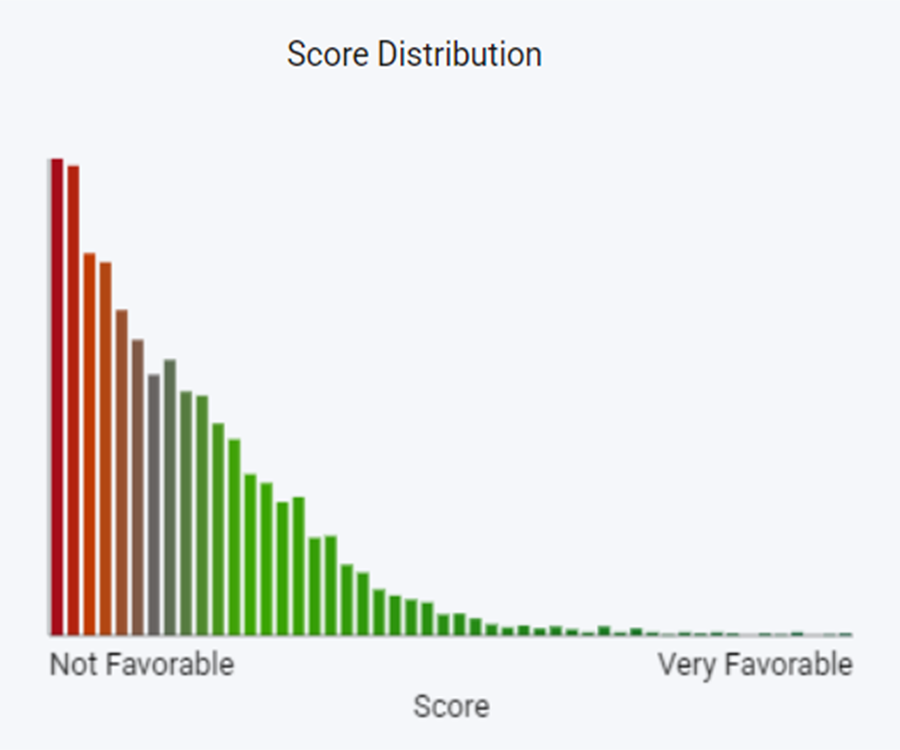
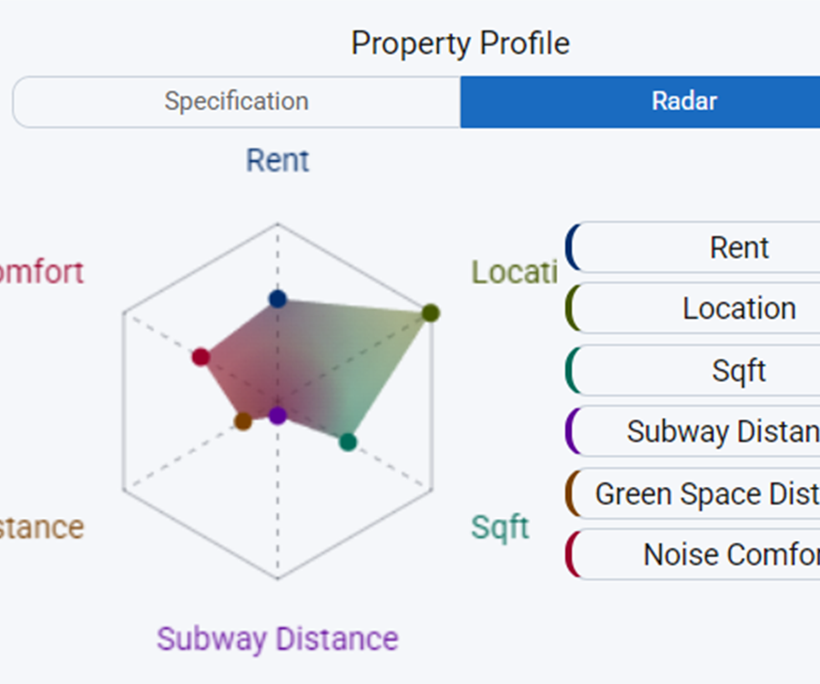

Explorentory
Github
AI-Powered Rental Discovery Platform
Machine Learning · LLM Integration · Geospatial Visualization
Stack:
FastAPI · PostgreSQL + PostGIS
scikit-learn · OpenAI API
MapLibre GL · Vanilla JavaScript
Overview
Explorentory is a full-stack, AI-powered NYC rental discovery platform. Rather than
mimicking the filter-first paradigm of traditional real estate search, where users must
commit to a price cap and bedroom count before seeing anything, Explorentory inverts the
process. Users express natural-language preferences, explore a neighborhood on a live map,
rate a curated sample of real properties, and receive personalized recommendations ranked
by an OLS regression model trained on their own feedback. Three LLM-powered endpoints
provide plain-English context at every stage. The platform operates on a PostGIS database
of approximately 3 million synthetic NYC units derived from PLUTO and building data, with MapLibre GL
rendering up to 5,000 results as an interactive choropleth map across 9 data dimensions.
Research Questions
01
AI-Driven Interaction
How can an AI-assisted experience translate natural language preferences into personalized rental recommendations?
- 4-step guided flow converts free-text intent and ranked priorities into structured API calls
/explainand/explain_resultuse GPT to narrate property matches and ML insights/chatparses natural language ("show me quiet studios under $2,500") into structured filter and sort directives applied client-side
02
Machine Learning Customization
How can machine learning adapt rental recommendations based on user behavior, constraints, and urban data?
- OLS regression trained live on 10 user-rated properties to infer latent preferences
- 11 engineered features: rent, sqft, bedroom/bathroom diff, proximity, noise, building age
- Hybrid final score:
(rule_score + ml_score) / 2 StandardScalerfit on 3M-record dataset prevents overfitting with sparse training data
03
Visualization & Experience Design
How can interactive visualizations clarify housing information and trade-offs in rental decision-making?
- Choropleth map with 9 switchable data dimensions
- Histogram showing result distribution vs. user's stated target value
- Radar triangle chart surfacing multi-axis trade-offs across 3–6 dimensions
- Dark / bright mode toggle with fully independent color palettes
Rethinking Rental Search
Traditional real estate platforms: Zillow, StreetEasy, Redfin, are built around a
filter-first paradigm: users must specify price, bedrooms, and neighborhood before seeing
any results. This forces premature decisions and obscures trade-offs. If a user's exact
criteria return zero results, they must manually adjust filters and re-search. Explorentory
replaces filter walls with ranked recommendations. The system learns what users actually
value from their rating behavior and surfaces properties that balance competing preferences,
including ones the user never explicitly stated.

| Feature | Zillow · StreetEasy · Redfin | Explorentory |
|---|---|---|
| Search paradigm | Hard filters: price range, beds, neighborhood set before results appear | Trade-off ranking with no filter walls; results always present |
| Personalization | None, or generic saved search alerts | OLS regression trained live on user's own 10 survey ratings |
| Result explanations | None; user must interpret listings manually | LLM-generated 2–3 sentence narrative per property |
| Neighborhood selection | Dropdown list or typed name search | Click directly on polygon boundaries of a 260-neighborhood live map |
| Data dimensions shown | Listing photos + price, beds, sqft | 9 choropleth modes + histogram distribution + radar chart |
| Conversational interface | None | /chat endpoint for natural language filter and sort over live results |
| Trade-off awareness | User must infer trade-offs manually across listings | Radar chart makes multi-dimensional trade-offs explicit |
| ML feedback loop | None | Survey ratings feed directly into the recommendation model each session |
| Data scale | Actual live listings (sparse, uneven coverage) | ~3M synthetic NYC units, dense and uniform across all neighborhoods |
User Experience Pipeline
The experience is structured as a four-step guided flow. Each step collects a different
layer of preference signal, from explicit numerical constraints, to geographic intent,
to implicit behavioral feedback, progressively building the data needed to produce a
personalized recommendation.
Step 1 — Preferences Modal
Step 2 — Neighborhood Selection Map
Step 3 — Property Rating Survey
Step 4 — Results Panel & Chat
System Architecture
Explorentory is a three-tier system. A PostGIS spatial database holds approximately
3 million property records and 260 neighborhood polygons. A FastAPI backend exposes
six REST endpoints: three for data retrieval and ML recommendation, and three for
OpenAI-powered natural language features. A Vanilla JavaScript frontend renders results
with MapLibre GL and two custom Canvas-based charts, with no front-end framework dependency.

UI Features
01 Natural Language Chat
A chat interface at the bottom of the results panel accepts natural language
queries against the live result set. The
/chat endpoint forwards
the user message and conversation history to GPT with a structured system prompt
that defines JSON output schemas for filter operations
({"filters": [...], "logic": "AND"}) and sort operations
({"sort": [{...}]}). The prompt embeds mappings for all 260
neighborhoods, building class codes, and all column semantics. The returned JSON
is applied client-side, re-ranking the displayed properties without an additional
server round-trip. A reset button restores the original recommendation order.

02 Dark and Bright Mode
A toggle button switches the entire interface between dark and bright modes.
Each mode has its own complete MapLibre GL style JSON (
style.json
for dark, style_bright.json for bright), so the basemap, road
labels, and water layers all invert as a unit. All nine choropleth color
palettes are independently defined for each mode. Canvas charts re-draw with
matching foreground and background colors, and property cards update their
text and border colors through CSS custom properties. The result is a fully
cohesive visual inversion with no partial repaints.

03 Property Cards and AI Explanations
The top-10 ranked results appear as compact cards in the sidebar, each showing
neighborhood name, rent, square footage, and bed/bath count. Clicking a card
triggers
map.flyTo() and highlights the corresponding building
footprint polygon on the choropleth. Each card exposes an Explain button that
calls /explain, which sends the property attributes alongside
the user's original preferences and free-text concern to GPT and returns a
2–3 sentence plain-English match narrative. A separate Explain Result button
at the top of the panel calls /explain_result, translating the
OLS regression coefficients into a conversational preference summary such as
"Your ratings suggest proximity to parks matters more to you than building age."

04 Choropleth Mode Selector
A toolbar above the map lets the user switch the choropleth coloring across
nine data dimensions: overall recommendation score, rent, square footage, year
built, number of building stories, elevator availability, distance to the nearest
park, distance to the nearest subway station, and noise level. Color stops are
computed from dataset percentiles so the full spectrum is always used regardless
of the value range. Switching modes simultaneously updates the histogram chart
to show the distribution of the newly selected field and redraws the radar chart
axes to match. The map, histogram, and radar chart therefore always remain in
sync with each other.

Visualization & Charts
Explorentory uses three coordinated visualizations: an interactive choropleth map
rendered with MapLibre GL, and two custom Canvas-based charts built without a charting
library. All three update in sync when the user switches the choropleth display mode
or selects a property card.
Choropleth Map

MapLibre GL renders up to 5,000 recommended properties as a WebGL choropleth
layer. Nine data dimensions are available: recommendation score, rent, sqft,
year built, stories, elevator presence, park proximity, subway proximity, and
noise level. Color stops are derived from dataset percentiles so contrast is
consistent regardless of value range. Clicking any polygon highlights the
matching property card in the sidebar.
Histogram

Shows the distribution of the active choropleth field across all 5,000 results.
Bin width adapts per field: $10 per bin for rent, 50 sqft per bin for floor area.
A vertical marker at the user's stated target value makes it immediately visible
whether the result set centers on the stated preference or skews toward trade-offs.
Redraws automatically when the choropleth mode changes.
Radar Chart

A multi-axis polygon chart with a configurable number of dimensions: Rent,
Location Distance, Sqft, Subway Distance, Green Space, and Noise Level. Each
axis is min-max normalized across the full result set. One polygon represents
the user's stated priority weights; a second overlay shows the selected
property's actual profile, making multi-dimensional trade-offs legible at
a glance instead of buried in a list of numbers.
Machine Learning Model
The recommendation engine combines a deterministic rule-based scorer with an OLS
regression model trained in real time on the user's survey ratings. With only 10
training samples and 11 features, careful feature engineering and global scaling
are essential to prevent overfitting.
Feature Engineering
Raw property attributes are converted to user-relative differences before training.
For example,
bedroomnum becomes |bedroomnum − target_bedrooms|,
aligning the feature with what the user actually cares about (deviation from their
preference) rather than the raw count. borocode_match is a binary flag
indicating whether the property is in the user's chosen borough. All 11 engineered
features are scaled with a StandardScaler fit on the entire 3M-record
dataset, providing stable mean and variance that do not shift with 10-sample noise.
Rule-Based Score (explicit priorities weighted 3×, 2×, 1×)
rule_score = Σ weight[i] × normalize(feature[i], direction[i])
ML Score (OLS prediction rescaled to [0, 1])
ml_score = (OLS_prediction − min) / (max − min)
Final Hybrid Score
final_score = (rule_score + ml_score) / 2
rule_score = Σ weight[i] × normalize(feature[i], direction[i])
ML Score (OLS prediction rescaled to [0, 1])
ml_score = (OLS_prediction − min) / (max − min)
Final Hybrid Score
final_score = (rule_score + ml_score) / 2
Design Rationale
The hybrid approach serves two purposes. The rule-based component ensures predictable,
interpretable behavior that respects user-stated priorities even when the ML signal is
noisy, which is inevitable with only 10 training samples. The ML component captures
implicit preferences that the user never explicitly stated: a consistent preference for
newer buildings, quieter streets, or larger units that emerged from rating behavior.
Averaging the two scores prevents either component from dominating and produces a more
robust, balanced final ranking. OLS coefficients are passed to
/explain_result
and translated into natural language, giving users a legible account of what the model
learned from their feedback.
Technical Stack
| Frontend | Vanilla JavaScript · MapLibre GL 3.6.1 · Canvas API (custom charts) |
| Backend | FastAPI 0.121.2 · Uvicorn · Python 3.12 |
| Database | PostgreSQL 16 · PostGIS (spatial extension) · EPSG:2263 → EPSG:4326 |
| Machine Learning | scikit-learn 1.7.2 · OLS LinearRegression · StandardScaler |
| Geospatial | GeoPandas 1.1.1 · Shapely · Pandas · NumPy |
| LLM Integration | OpenAI SDK · GPT with structured JSON output (3 endpoints) |
| Data | ~3M synthetic NYC units (KNN-imputed from PLUTO) · 260 neighborhood polygons |